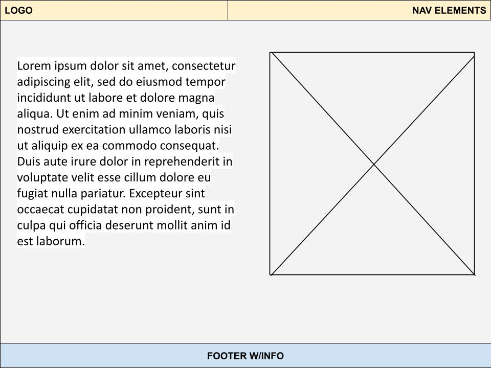
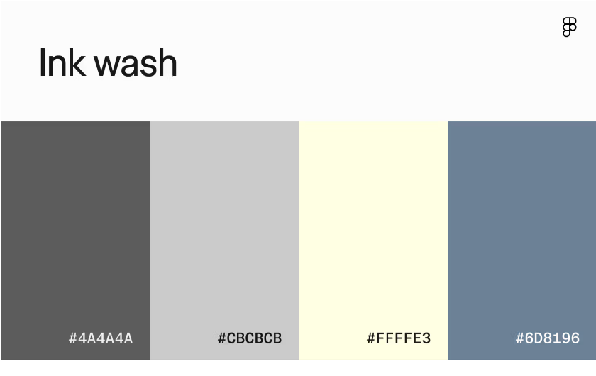

comments
Overll Structure
As for the structure of the site, the following wireframe diagram demonstrates the consistent format that each page followed. The home page is the only one breaks the
format slightly with a simple landing page, but after that follows a similar format. The navbar on the top serves as a consistent navigation element and return to the
home page.

Graphic Design
The website uses a specific colour palette I found online that appealed the most to me. From this URL figma.com/resource-library/color-combinations/,
I chose the Ink Wash combination, featuring grey, blue, and off-white. As for my personal accent, I chose gold yellow. The navbar has hover effects, creating a responsive UI.

Additionally, the font used was Helvetica Neue, a sans-seriff font that I found to look nice with a dark grey font colour. The logo however uses Times New Roman with gold color to be distinct from the rest of the site.
Alt Tag and CSS off
alt tag
The alt tag was mainly used for images. As most of the images had long names, I used the alt tag to easier names to write like portrait_3 in accordance
with the page being modified.
css off
When CSS is turned off, the pages still display the content and images properly, as well as the hyperlinks to each page, the footer, tables, etc. The design and aesthetics of the
website however is significantly reduced, but the website is still functioanl and usable.
header/navbar.html
html-elements needed to prep navbar
| html-elements |
description |
<nav class="navbar"</div> |
All <a> tag links wrapped in navbar class to be modified within css |
| <div> class="logo" id="site-logo" |_ANDY_| </div> |
Makes logo a seperate entity/class |
| < class="nav-links" > |
Makes <a> tag elements an unorder list as it helps with styling within css and overall readability |
The .navbar class justifies the size and design elements of the entire navigation bar.
| css-elements |
description |
Position: sticky |
Ensures navbar stays at the top when scrolling |
| Top: 0 |
Ensures that the navbar stays at the very edge |
| z-index: 100 |
Ensures nav bar stays above everything |
| box-sizing: border-box |
ensures all content within navbar stays within set borders |
| Display: flex; |
Ensures that the navbar stays at the very edge |
| justify-content: space-between; |
Pushes logo and navbar elements to the sides, hence having spacing inbetween |
| align-items: stretch; |
Ensures logo and navbar elements fill the entire height of the navbar (important for hover properties) |
| color and background-color; |
sets the color palette for navbar and rest of site, which is navy-blue, off-white, and yellow as accents |
.navlinks class styles navigation hyperlinks
| css-elements |
description |
list-style: none |
Removes markers like bullet points, making navigation elements look cleaner |
| margin and padding |
Keeps navlink elements to the edge |
.nav-links li targets list elements within navlinks and essentially ensures the child properties become flex items
.nav-links a targets all a tags, mainly the navigation elements.
| css-elements |
description |
display: flex |
makes each a tag container flex, allowing for finer control over alignment |
| align-items: center |
centers content |
| padding: 15px 15px |
Adds space within nav elements, increasing clicking area. |
| font weight: 800 |
Makes text extra bold |
| font size: 20px |
Increases font size, improving readability |
| text-decoration: none |
Removes default underlines under hyperlinks |
| transition: background-color 0.3s ease |
Smooth animation for when nav elements are hovered over rather than instant color change |
.nav-links a:hover class changes the color of nav elements when hovered on
#site-logo design
| css-elements |
description |
display: flex |
Makes container flex, allowing for finer control over alignment |
| align-items: center |
Centers content |
| padding: 0px 30px |
Ensures height has some space between text and nav border |
| font-family: Cambria, Cochin, Georgia, Times, 'Times New Roman', serif; |
Changes font to times new roman, distinguishing from the san-serif fonts of the sites default text |
| font-weight: 800 |
Makes logo extra bold |
| font-size: 40px |
Larger font size for better distinction |
| color: #d4af37 |
sets yellow accent, distinguishing from sites color scheme |
footer
| html-elements |
description |
<footer> |
to indicate that the section being created is for the footer |
| content |
content mainly includes author, email, and copyright |
| css-elements |
description |
.body class - min-height: 100vh |
minimum height of viewport is at 100%, so reaches entire screen |
| .body class - display: flex & flex_direction: column |
Added to make body a vertical flex container, so that child elements (i.e. navbar, main, footer, etc) will stack on top of each other and can be manipulated with flex properties. |
.main class - flex: 1 |
tells main to grow and fill in any empty space between navbar and footer |
| customised elements like padding and text-alignment |
the footer follows the color scheme set by the website, and has been centered. Padding is set at 30px to create distance between the top of the footer and sides. |
index.html
landing page
| html-elements |
description |
basic html elements |
Basic elements like the <html> tag, <a> tags, <head>, <title>, etc. were added for all pages for basic functionality |
| landing page html |
Welcome text is wrapped within a <header> tag and classified as h_text div class. <Span> tags are centered around "Welcome" as it is standout text |
| css-elements |
description |
.header class - background image size |
In order to place the background image, the width and height was set as width: 100% and height: 100vh to fill the entire screen. Also, background-size: cover was set to cover the entire page
|
| .header class - background styling |
linear-gradient(rgba(0,0,0,0.7), rgba(0,0,0,0.2)), url(images/mountains_blue.jpg) - targets image file and darkens the image for better visibility of text |
.h_text class- position: absolute |
Welcome text stays in the same place no matter what |
| .h_text class - positioning |
Text was position in the center using top: 50%, left 50%, transform: translate(-50%. -50%). |
| .h_text class - text styling |
font-size: 100px for distinct heading, already bolded from h1 classification in html. Color:#ffffef text color scheme |
biography
| html-elements |
description |
content |
Basic personal information and what the website is about |
image |
image placed within about-section class for proper flex/wrap adjustment within css |
| unordered list |
List wrapped within <ul> tag, with content being listed with <li> tag. To add sub-bulletpoints, another <ul> tag
was added within. Content mainly includes personal interests and basic skills
|
| css-elements |
description |
.about-section class - display: flex, flex-direction: row, align-items: flex-start |
This css code is done purely so that the image and text will sit side-by-side |
| .about-section class - gap: 30px, padding: 20px |
Gap and padding is done so there is some space between the image and text. |
.portrait class
max-width: 35%, border-radius: 10px, margin: 10px, box-shadow:0 24px 48px |
width was done as image stretched across entire screen, disallowing for flex to work. Other elements like border and margin were done to create distance between text and image.
Box-shadow was added for a drop shadow, creating a 3d effect.
|
past.html
| html-elements |
description |
table |
List all my skills in a table format. This done by using the <table> tag, then using the <tr> tag, then placing informtion in via the <th> tag. |
pastwork images |
Images are placed within pastwork class for editing, and then 3 images are placed with proper naming. |
| css-elements |
description |
.table class - border-collapse: collapse, max-widith: 80%, margin: 30px |
Border-collapse prevents double lines. The other properties just change the way it looks and spacing. |
| .td, th, .th - border: 1px solid black, padding: 10px 15px, background-color: #d4af37. color: white |
Changes the styling of the table, making the border slimmer, background color of the main background color of the headings yellow and the rest an offwhite.
|
| .pastwork class - display: flex, gap: 10px, margin: 10px, justify-content: center |
Display flex allows for images to sit side-by-side, then gap and margin add spaces inbetween the image and page, justify-content: center centers the images. |
| .pastwork img class - max-width: 30%, height-auto; |
Class targets the images within .pastwork class. Just changes the size and height, shrinking it so they can sit side-by-side. |
future.html
| html-elements |
description |
content |
Just contains an image and content regarding the future within futureContainer class, futureContent class, and futuretext class. |
| css-elements |
description |
.futureContainer - display: block |
Turns everything within into a block, allowing for it to wrap around other elements and be affected by flex properties. |
.futureHeading - margin: 10px |
Creates space between the heading and other content. |
.futureContent - display: flex, align-items: flex-start, gap: 20px, margin: 20px |
Display: flex just allows for content to sit side-by-side, align-items: flex-start aligns the item at the start of the container. Gap and margin is there to create some space so it doesn't feel cluttered. |
.futuretext - margin-left and font-size |
Creates space into left. Font size is increased for better visibility and fill in white space. |
.portrait_3 - max-width: 35%, border-radius: 10px, margin-left:30px, box-shadow: 0 24px, 48px |
Max-width makes the image smaller, border-radius: 10px rounds the edges, margin-left creates more space with the left side of the image, box-shadow adds a drop shadow for 3d effect. |
comments.html
| html-elements |
description |
content and tables |
Contains contains the instructions on what each element does, how it was created, the design of the site, etc. The description of each class and code is organised within tables for easier readability. All content is wrapped in the explanations class. |
images |
Content is placed after the related sections for more info. |
| css-elements |
description |
.explanations - margin: 30px |
Creates space between the edge of the site and content. |
.wireframe & .colour_palette - display: block, margin: 0 auto |
Converts image to block-level element, allowing for customisation or centering via margin: 0 auto. |